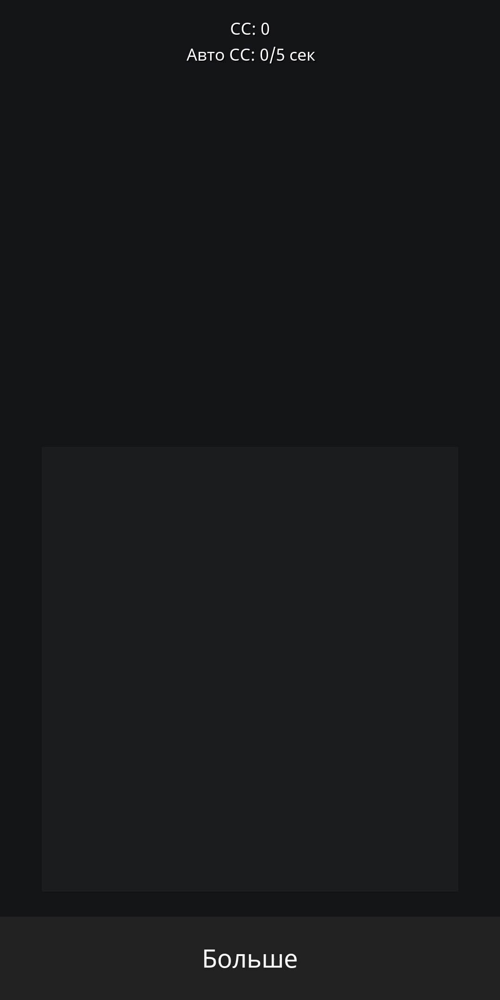
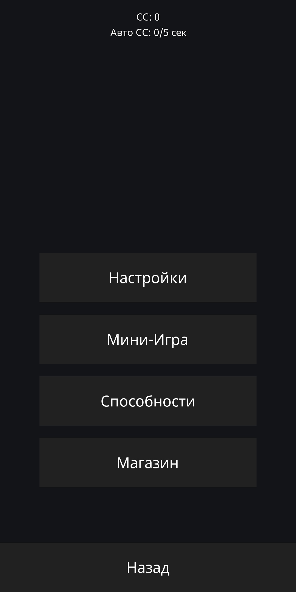
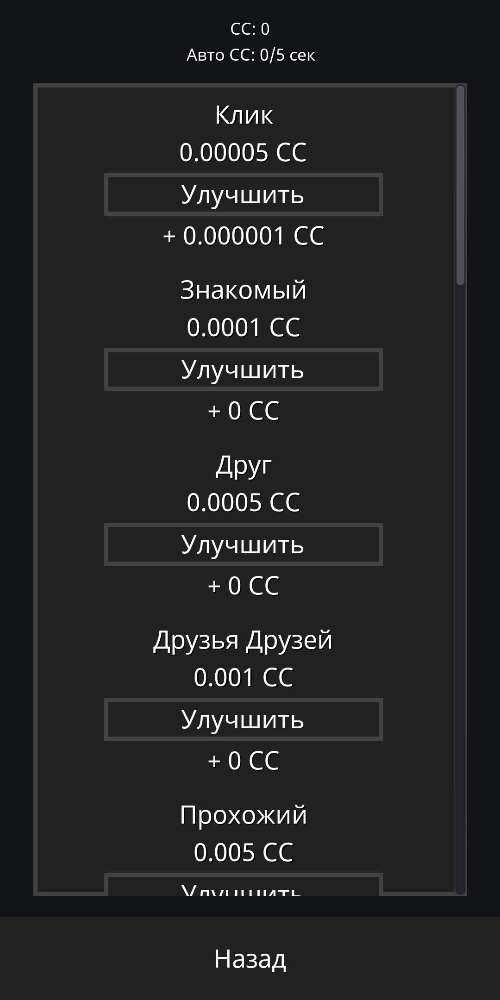
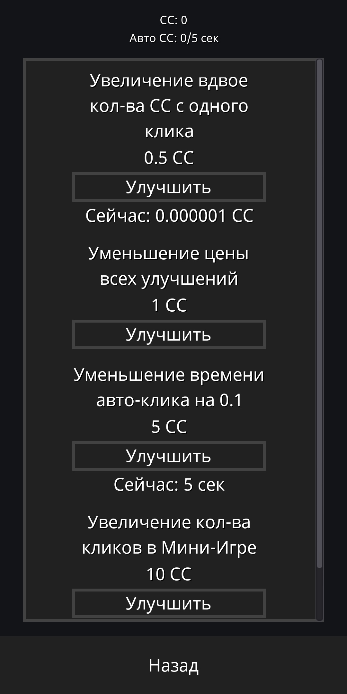
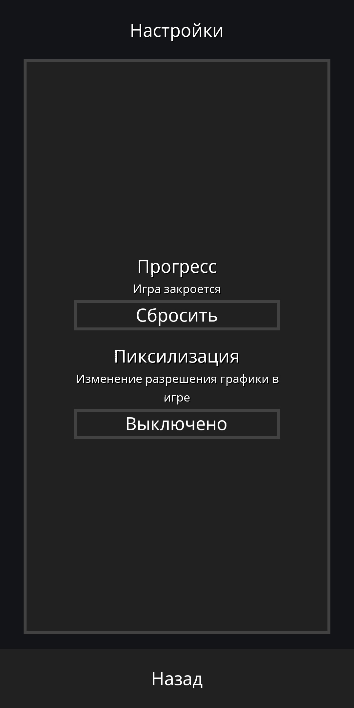
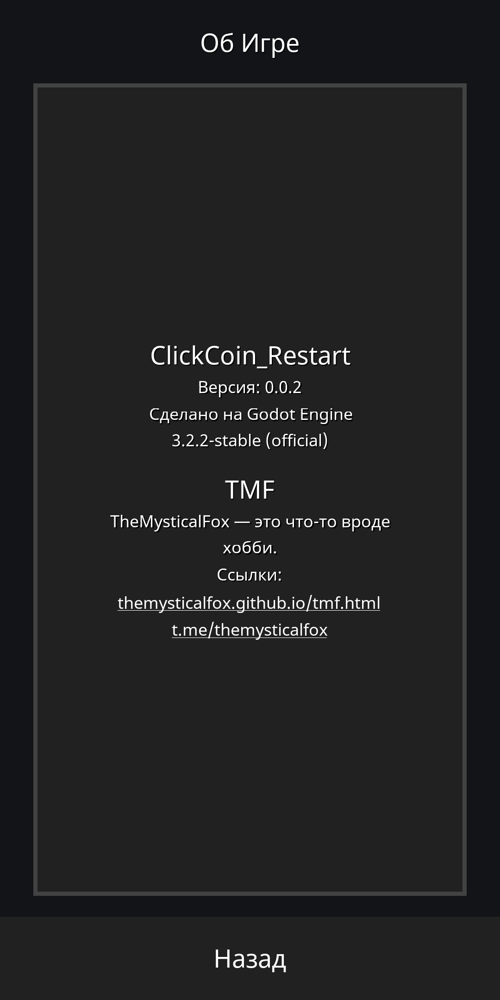
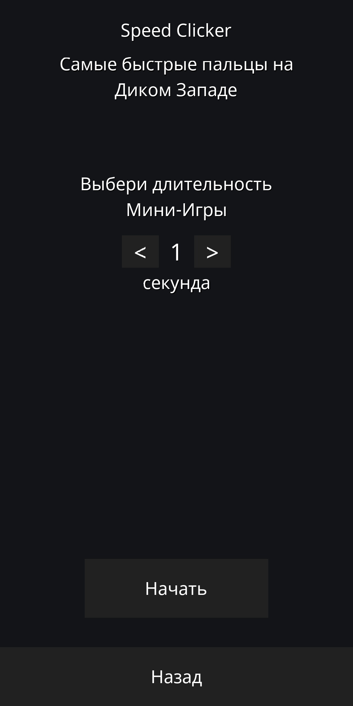

ClickCoin_Restart
Эта игра является неким перезапуском старой версии игры «ClickCoin».
Что есть?
Магазин: 19 улучшений.
Способности (это то, что может сильно олегчить игру, если покупать их): 4 штуки.
Мини-игра «Speed Clicker» - самые быстрые пальцы на Диком Западе.
И пару настроек... Всё!
Ссылки
Скачать (APK ARM7) Скачать (Я.Диск) Скачать (Telegram) Доска в TrelloСкриншоты
Главный Экран
Раздел «Больше»
Магазин
Способности
Настройки
Об Игре
Главный экран
Мини-игры
Игровой процесс
Мини-игры
Процесс получения
награды в Мини-игре
Наверх